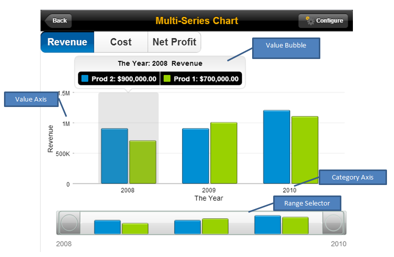

The MAKit Chart is a SAPUI5 control that provides charting features.
MAKit chart is designed for mobile and tablet use. It has unique features such as Value Bubble
and Range Selector that make chart report much more rich and interactive.

MAKit chart supports the following touch interactions on mobile devices:
- tap to highlight certain part of the chart
- double tap
- longpress
- two finger pinch to zoom in or out
- one finger drag to move chart's Value Bubble highlight
- two finger swipe to scroll the chart when zoomed in
Currently, it supports the following chart types:
- Column
- Horizontal bar (table bar)
- Line
- Bubble
- Pie
- Donut
- Waterfall column
- Waterfall bar
- Stacked column
- 100% stacked column
The value bubble provides an interactive way of showing details of the
chart. It provides detailed information, that is, the value of the highlighted chart
region. A user can hide or show specific series of the chart by toggling the legends on
the value bubble.
The range selector provides an overview of the whole chart to the user and
also allows to zoom in or out to a specific part of the chart.
The following controls and elements are provided in the sap.makit
library:
- sap.makit/Chart – SAPUI5 chart control (type:
sap.ui.core/Control)
- sap.makit/Axis – Base type for the chart’s axis (type:
sap.ui.core/Element)
- sap.makit/CategoryAxis – Properties of the chart’s category axis
(type: sap.makit/Axis)
- sap.makit/ValueAxis – Properties of the chart’s category axis
(type: sap.makit/Axis)
- sap.makit/Category– Properties of the chart’s category axis (type:
sap.makit/Element)
- sap.makit/Value – Properties of the chart’s value axis (type:
sap.makit/ Element)
- sap.makit/Series – Properties of the chart’s series (type:
sap.ui.core/Element)
- sap.makit/Row – Row collection for data binding (type:
sap.ui.core/Element)
- sap.makit/Column – Column mapping for data binding (type:
sap.ui.core/Element)
- sap.makit/ValueBubble – Properties for the chart’s value bubble
(type: sap.ui.core/Element)
Simple Types:
- sap.makit/ChartType – Enumeration for chart type (type:
string)
- sap.makit/SortOrder – Enumeration for category’s
sortOrder (type: string)
- sap.makit/LegendPosition – Enumeration for
legendPosition (type: string)
- sap.makit/ValueBubbleStyle – Enumeration for the value bubble’s
positioning style (type: string) for non-Pie/donut/HBar chart
- sap.makit/ValueBubblePosition – Enumeration for the value bubble’s
position on pie/donut Chart (type: string)